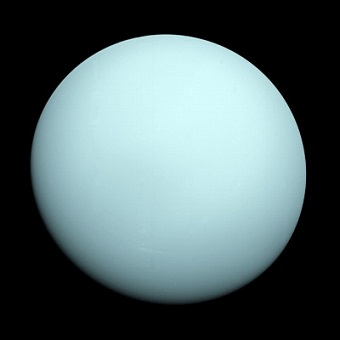

Уран  Седьмая планета была обнаружена У. Гершелем в 1781 году при помощи телескопа. И изначально была принята им за комету. Спустя шесть лет астроном открыл и два из 27 спутников планеты – Обертон и Титанию. Это был бледно-голубой Уран, который назвали именем римского бога неба. Несмотря на то, что Уран можно заметить без использования специальных приборов, до открытия Гершеля его принимали за блеклую звезду. По величине этот ледяной гигант занимает третье место и имеет радиус 25 567 км. Кольца Урана непрозрачны и состоят из макрочастиц и пыли. Уран – наиболее холодная планета в системе. Температура не его поверхности достигает -224˚С. Он практически не излучает тепло. Гипотетически считается, что это произошло из-за большого наклона оси вращения Урана и рассеивания имеющегося тепла. Имея уникальный наклон оси в почти в 97,77˚С, эта планета вращается весьма необычным образом – точно «лежа на боку». Год на Уране длится 84 года. Седьмая планета состоит из небольшого железно-каменного ядра, вокруг которого находится мантия, содержащая воду, аммиак и метан. Окружает его атмосфера, содержащая водород, гелий и метан. Сутки на Уране составляют чуть более 17 часов.